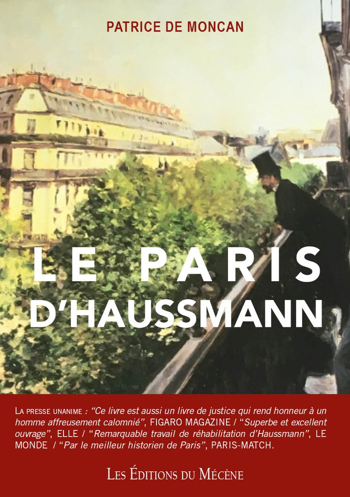

Le Paris d’Haussmann
Un ouvrage consacré à la mutation de Paris sous le Second Empire et au rôle du baron Haussmann dans la transformation de la capitale.

Le Paris d’Haussmann
Un ouvrage consacré à la mutation de Paris sous le Second Empire et au rôle du baron Haussmann dans la transformation de la capitale. Le titre figure dans les catalogues bibliographiques publics et dans la liste des ouvrages distingués mise en avant par la maison.
Demander des informationsSur cet ouvrage.
Qui a écrit Le Paris d’Haussmann ?
L’ouvrage est signé Patrice de Moncan, fondateur des Éditions du Mécène, avec Claude Heurteux.
Le Paris d’Haussmann a-t-il reçu des distinctions ?
Oui : le Grand Prix Haussmann de la FNAIM et le Prix Charles Garnier de la Société de Géographie.
Comment se procurer Le Paris d’Haussmann ?
Le livre est disponible sur demande auprès des Éditions du Mécène, via le formulaire de contact du site.
Poursuivre la lecture.
D’autres titres du catalogue, à explorer dans le même esprit.